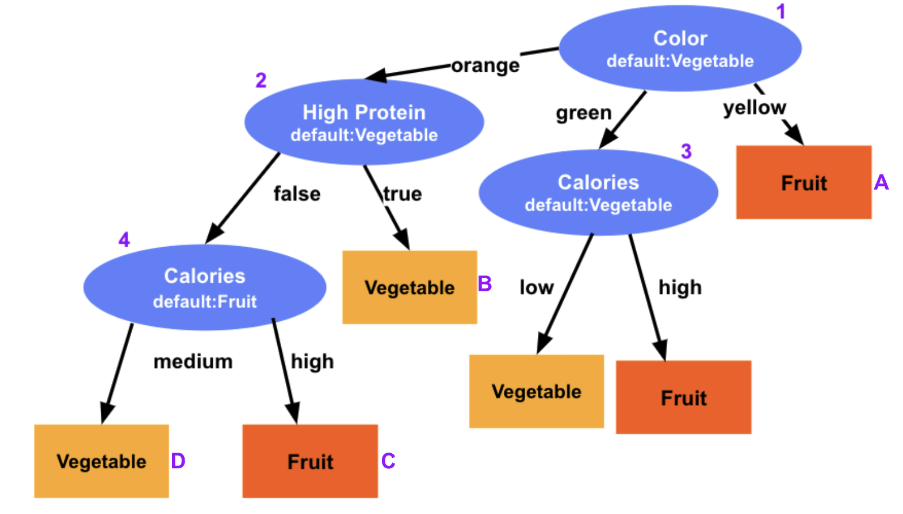
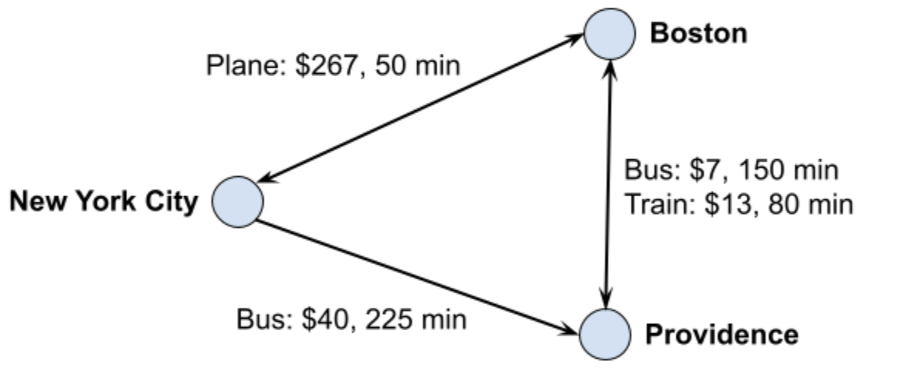

The Tetris game project effectively applies
object-oriented principles
and class interaction
to create a functional game with dynamic gameplay and color-based
mechanics. Through skillful design choices and efficient implementation, the project
demonstrates proficiency in managing game flow and integrating
core gameplay features.
Pacman (CS15)
The project integrates dynamic gameplay,
movement mechanics, and collision handling,
highlighting logic implementation and code organization.
The design efficiently manages modes, employs enums for data representation, and
modularizes movement methods for clarity and maintainability.
Decision Tree (CS200)
This project involves implementing a classic machine learning
algorithm using decision trees to generate predictive functions
based on training data. It offers practice in designing with classes,
utilizing tree structures, and understanding the concept of machine
learning as well as testing and recursion in programming.

Travel Planner (CS200)
In this project, I created a travel route planning system allowing users to
request routes based on priorities such as price, time, and directness. The
project encompasses skills in model-view-controller, function objects, generics,
data structures, algorithm implementation and debugging, and handling complex class
interactions, while applying algorithms like BFS and Dijkstra's for pathfinding and
integrating code with user interactions.

Dictionary
This project demonstrated my proficiency in front-end web development,
JavaScript programming, and API integration for real-time data retrieval.
Key achievements included user-friendly features like word
pronunciation and structured data presentation, showcasing my commitment to creating engaging and
informative digital solutions.